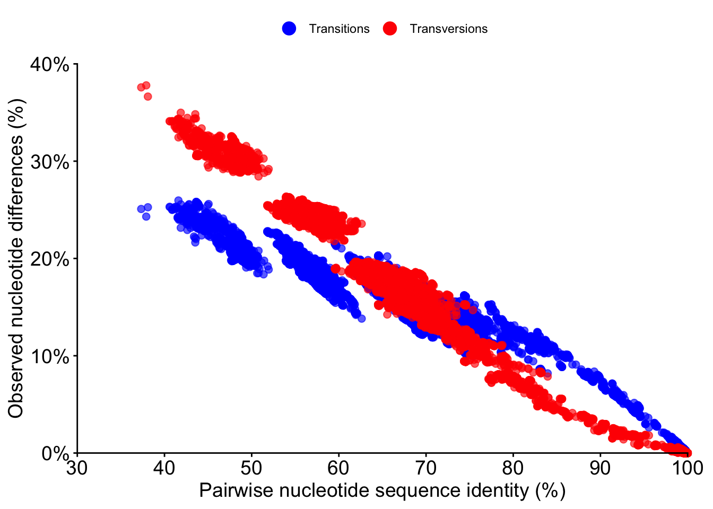
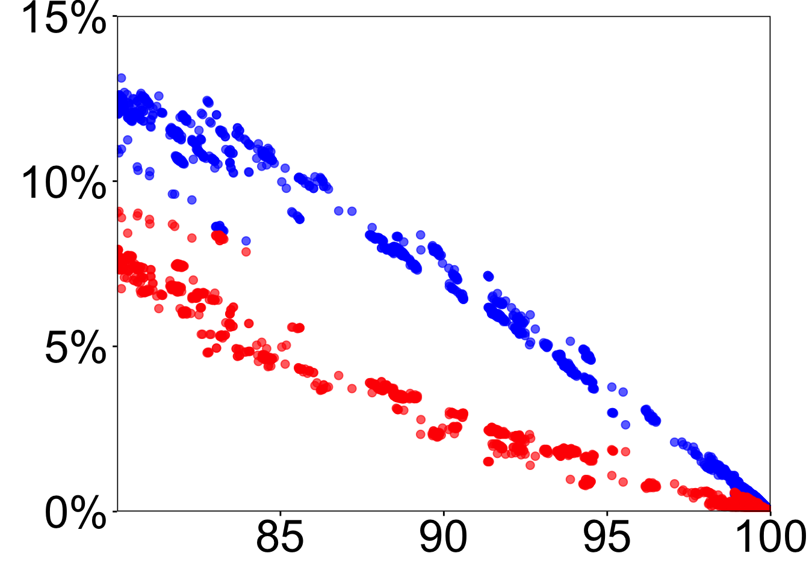
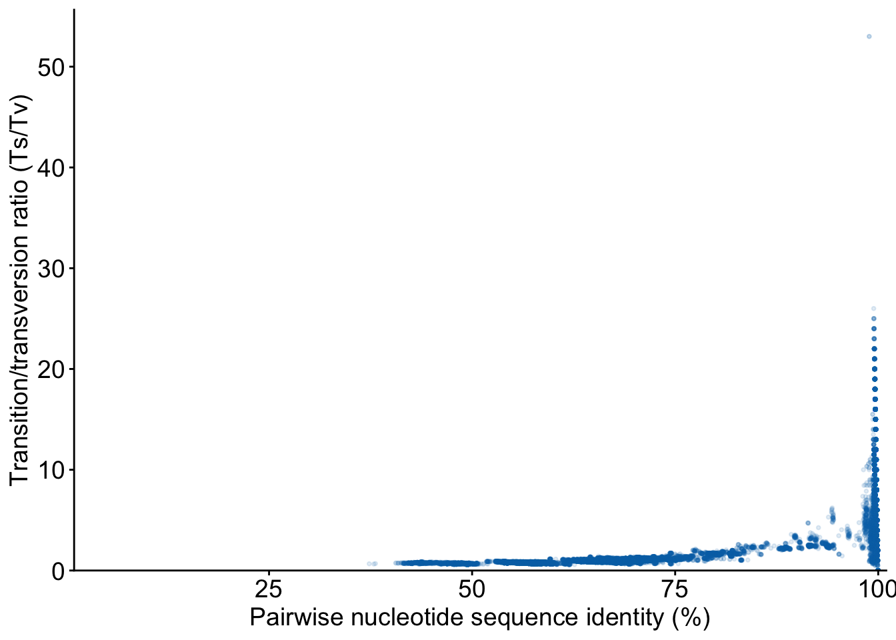
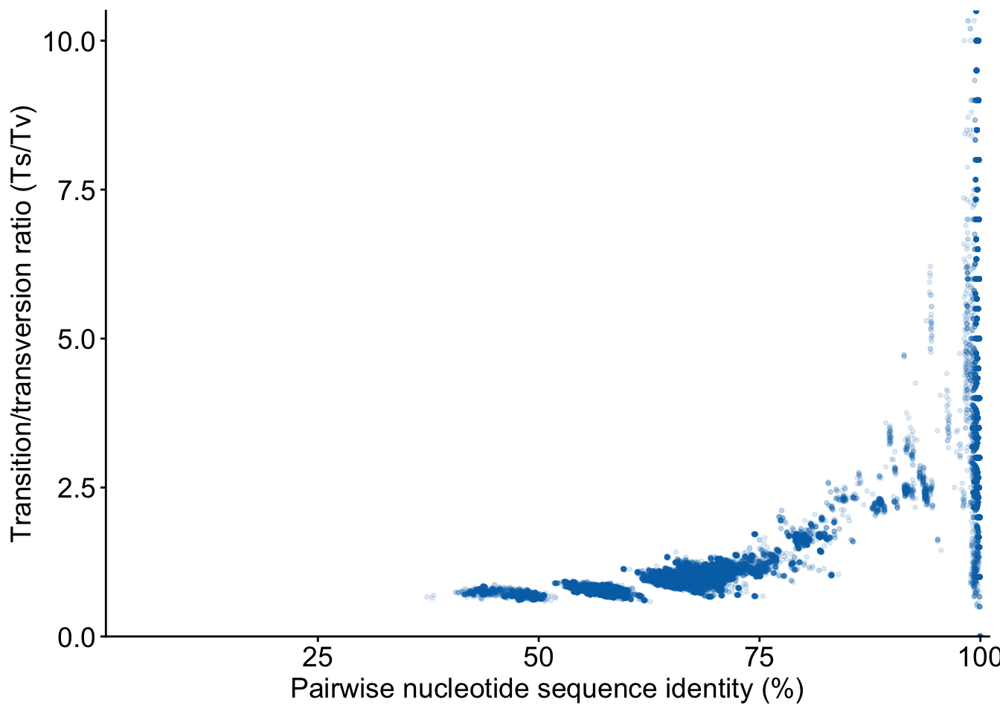
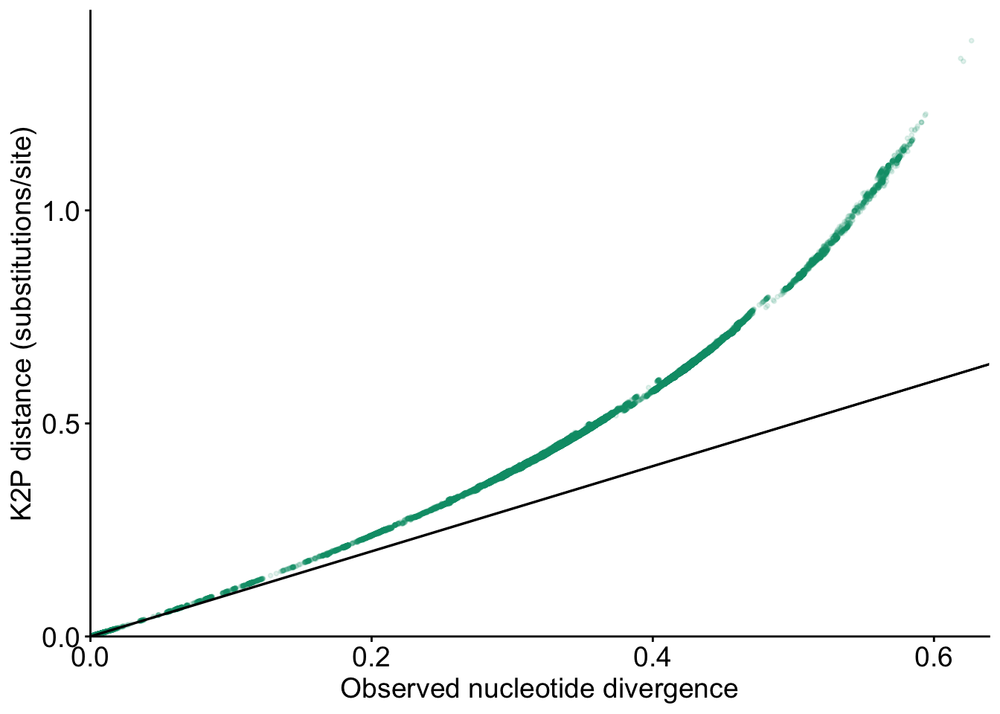

library(ggplot2)
options(stringsAsFactors = FALSE)Transition and transversion patterns in Baculoviridae
Note
This report was generated using AI under general human direction. At the time of generation, the contents have not been comprehensively reviewed by a human analyst.
Introduction
Transitions and transversions describe two classes of nucleotide differences. Their pairwise frequencies provide a descriptive view of how observed substitutions are distributed among baculovirus genomes as nucleotide identity decreases. This analysis also compares observed divergence with the Kimura two-parameter (K2P) distance. It is exploratory: no species-demarcation threshold is applied, and observed differences are not interpreted as a direct count of historical substitution events.
Input data
The analysis uses the three-gene concatenated nucleotide alignment generated in 02_sequence_alignment.qmd and the corresponding pairwise identity table generated in 03_pairwise_sequence_identity.qmd. No alignment is recalculated and no MAFFT call is made.
alignment_dir <- file.path("results", "alignments", "three_genes", "concatenated")
identity_dir <- file.path("results", "pairwise_sequence_identity")
output_dir <- file.path("results", "substitution_patterns")
figure_dir <- file.path(output_dir, "figures")
alignment_path <- file.path(alignment_dir, "three_genes.fna")
identity_path <- file.path(identity_dir, "three_genes_pairwise_identity.tsv")
required_files <- c(alignment_path, file.path(alignment_dir, "partitions.tsv"), identity_path)
missing_files <- required_files[!file.exists(required_files)]
if (length(missing_files) > 0L) stop("Required step-02/03 files are missing:\n", paste(missing_files, collapse = "\n"), call. = FALSE)
read_tsv <- function(path) read.delim(path, sep = "\t", quote = "", na.strings = "", check.names = FALSE, stringsAsFactors = FALSE)
identity_table <- read_tsv(identity_path)
partitions <- read_tsv(file.path(alignment_dir, "partitions.tsv"))
required_identity_columns <- c("genome_group_id_1", "genome_group_id_2", "identical_positions", "compared_positions", "identity_percentage", "compared_fraction")
if (length(setdiff(required_identity_columns, names(identity_table))) > 0L) stop("The step-03 identity table lacks required columns.", call. = FALSE)
if (length(setdiff(c("gene", "start", "end", "alignment_length"), names(partitions))) > 0L) stop("The three-gene partition table lacks required columns.", call. = FALSE)
dir.create(output_dir, recursive = TRUE, showWarnings = FALSE)
dir.create(figure_dir, recursive = TRUE, showWarnings = FALSE)read_fasta <- function(path) {
lines <- readLines(path, warn = FALSE)
header_rows <- which(startsWith(lines, ">"))
if (length(header_rows) == 0L || header_rows[1] != 1L) stop("Invalid FASTA file: ", path, call. = FALSE)
records <- lapply(seq_along(header_rows), function(i) {
start <- header_rows[i] + 1L
end <- if (i < length(header_rows)) header_rows[i + 1L] - 1L else length(lines)
sequence <- paste(lines[start:end][nzchar(trimws(lines[start:end]))], collapse = "")
if (!nzchar(sequence)) stop("Empty FASTA sequence in ", path, call. = FALSE)
list(header = substring(lines[header_rows[i]], 2L), sequence = sequence)
})
headers <- vapply(records, `[[`, character(1), "header")
if (anyDuplicated(headers)) stop("Duplicate FASTA headers in ", path, call. = FALSE)
records
}
records <- read_fasta(alignment_path)
genome_ids <- vapply(records, `[[`, character(1), "header")
sequences <- vapply(records, `[[`, character(1), "sequence")
alignment_lengths <- nchar(sequences)
if (length(genome_ids) != 520L || anyDuplicated(genome_ids)) stop("The three-gene alignment must contain 520 unique genome_group_id headers.", call. = FALSE)
if (length(unique(alignment_lengths)) != 1L) stop("Alignment sequences do not have a common length.", call. = FALSE)
alignment_length <- unique(alignment_lengths)
if (nrow(identity_table) != choose(length(genome_ids), 2)) stop("The identity table does not contain the expected number of pairwise comparisons.", call. = FALSE)
if (anyDuplicated(paste(identity_table$genome_group_id_1, identity_table$genome_group_id_2, sep = "\r")) || any(identity_table$genome_group_id_1 == identity_table$genome_group_id_2)) stop("The identity table contains duplicate or self-comparisons.", call. = FALSE)
if (!all(identity_table$genome_group_id_1 %in% genome_ids) || !all(identity_table$genome_group_id_2 %in% genome_ids)) stop("The identity table contains an ID absent from the alignment.", call. = FALSE)
partitions <- partitions[match(c("polh_gran", "lef8", "lef9"), partitions$gene), , drop = FALSE]
if (nrow(partitions) != 3L || anyNA(partitions$start) || any(partitions$start != c(1L, head(partitions$end, -1L) + 1L)) || partitions$end[3] != alignment_length) stop("The three-gene partitions are invalid.", call. = FALSE)
cuni_index <- match("AF403738", genome_ids)
if (is.na(cuni_index)) stop("CuniNPV (AF403738) is absent from the alignment.", call. = FALSE)
cuni_polh <- substring(sequences[cuni_index], partitions$start[1], partitions$end[1])
if (any(strsplit(cuni_polh, "", fixed = TRUE)[[1]] != "-")) stop("The CuniNPV polh/gran partition is not gap-only.", call. = FALSE)Methods
Only positions at which both sequences contain an unambiguous A, C, G, or T are included. Gaps, N, and all other IUPAC ambiguity symbols are excluded by pairwise deletion. A transition is A↔︎G or C↔︎T; a transversion is A↔︎C, A↔︎T, G↔︎C, or G↔︎T. For each pair, \[P = Ts/L\] and \[Q = Tv/L\], where \[L\] is the number of valid compared positions. Observed divergence is \[P+Q\], and K2P is calculated only when both logarithmic arguments in the specified formula are positive.
The indicator matrices below calculate all pairwise counts using matrix multiplication. The sequences are converted once to a raw nucleotide matrix; no per-pair strsplit() is used.
pairwise_substitutions <- function(sequences, genome_ids, alignment_length) {
n <- length(sequences)
raw_matrix <- matrix(unlist(lapply(toupper(sequences), charToRaw), use.names = FALSE), nrow = n, byrow = TRUE)
codes <- as.raw(charToRaw("ACGT"))
indicators <- lapply(codes, function(code) raw_matrix == code)
valid <- indicators[[1]] | indicators[[2]] | indicators[[3]] | indicators[[4]]
compared_matrix <- tcrossprod(valid * 1L)
identical_matrix <- matrix(0L, nrow = n, ncol = n)
for (indicator in indicators) identical_matrix <- identical_matrix + tcrossprod(indicator * 1L)
transition_matrix <- (indicators[[1]] * 1L) %*% t(indicators[[3]] * 1L) + (indicators[[3]] * 1L) %*% t(indicators[[1]] * 1L) + (indicators[[2]] * 1L) %*% t(indicators[[4]] * 1L) + (indicators[[4]] * 1L) %*% t(indicators[[2]] * 1L)
transversion_matrix <- (indicators[[1]] * 1L) %*% t(indicators[[2]] * 1L) + (indicators[[2]] * 1L) %*% t(indicators[[1]] * 1L) + (indicators[[1]] * 1L) %*% t(indicators[[4]] * 1L) + (indicators[[4]] * 1L) %*% t(indicators[[1]] * 1L) + (indicators[[3]] * 1L) %*% t(indicators[[2]] * 1L) + (indicators[[2]] * 1L) %*% t(indicators[[3]] * 1L) + (indicators[[3]] * 1L) %*% t(indicators[[4]] * 1L) + (indicators[[4]] * 1L) %*% t(indicators[[3]] * 1L)
pair_indices <- which(upper.tri(compared_matrix), arr.ind = TRUE)
compared <- as.integer(compared_matrix[pair_indices])
identical <- as.integer(identical_matrix[pair_indices])
transitions <- as.integer(transition_matrix[pair_indices])
transversions <- as.integer(transversion_matrix[pair_indices])
P <- ifelse(compared > 0, transitions / compared, NA_real_)
Q <- ifelse(compared > 0, transversions / compared, NA_real_)
k2p <- ifelse(compared > 0 & (1 - 2 * P - Q) > 0 & (1 - 2 * Q) > 0, -0.5 * log(1 - 2 * P - Q) - 0.25 * log(1 - 2 * Q), NA_real_)
data.frame(
genome_group_id_1 = genome_ids[pair_indices[, 1]], genome_group_id_2 = genome_ids[pair_indices[, 2]],
compared_positions = compared, identical_positions = identical, transitions = transitions, transversions = transversions,
transition_frequency = P, transversion_frequency = Q, observed_divergence = P + Q,
identity_percentage = ifelse(compared > 0, 100 * identical / compared, NA_real_),
ts_tv_ratio = ifelse(transversions > 0, transitions / transversions, NA_real_), k2p_distance = k2p,
stringsAsFactors = FALSE
)
}
substitution_patterns <- pairwise_substitutions(sequences, genome_ids, alignment_length)The identity values supplied by step 03 are retained as the validation reference. They are not used to replace the identity values calculated from the substitution counts.
pair_key <- function(x, y) paste(x, y, sep = "\r")
if (!identical(pair_key(substitution_patterns$genome_group_id_1, substitution_patterns$genome_group_id_2), pair_key(identity_table$genome_group_id_1, identity_table$genome_group_id_2))) stop("The substitution results do not preserve the step-03 pair order.", call. = FALSE)
if (any(substitution_patterns$identical_positions + substitution_patterns$transitions + substitution_patterns$transversions != substitution_patterns$compared_positions)) stop("Identity, transition, and transversion counts do not sum to compared positions.", call. = FALSE)
if (any(abs(substitution_patterns$observed_divergence - (1 - substitution_patterns$identity_percentage / 100)) > 1e-12, na.rm = TRUE)) stop("Observed divergence is inconsistent with identity.", call. = FALSE)
if (any(abs(substitution_patterns$identity_percentage - identity_table$identity_percentage) > 1e-10, na.rm = TRUE)) stop("Calculated identity values disagree with step 03.", call. = FALSE)
if (any(substitution_patterns$compared_positions < 0 | substitution_patterns$identical_positions < 0 | substitution_patterns$transitions < 0 | substitution_patterns$transversions < 0)) stop("Negative substitution counts detected.", call. = FALSE)
if (any(substitution_patterns$transition_frequency < 0 | substitution_patterns$transition_frequency > 1 | substitution_patterns$transversion_frequency < 0 | substitution_patterns$transversion_frequency > 1, na.rm = TRUE)) stop("Substitution frequencies outside 0–1 detected.", call. = FALSE)Observed substitution patterns
The total observed divergence is mathematically determined by nucleotide identity because \[P+Q = 1 - identity/100\]. The informative comparison here is therefore the relative contribution of transitions and transversions, rather than the overall increase in observed differences alone.
write.table(substitution_patterns, file.path(output_dir, "pairwise_substitution_patterns.tsv"), sep = "\t", quote = FALSE, row.names = FALSE, na = "")plot_font_size <- 14
plot_width_cm <- 25.17
plot_height_cm <- 10.5
plot_dpi <- 300
plot_theme <- theme_classic(base_family = "Arial") + theme(axis.text = element_text(size = plot_font_size), axis.title = element_text(size = plot_font_size), legend.position = "top", panel.grid = element_blank())
substitution_long <- rbind(
data.frame(identity_percentage = substitution_patterns$identity_percentage, frequency = substitution_patterns$transition_frequency, type = "Transitions"),
data.frame(identity_percentage = substitution_patterns$identity_percentage, frequency = substitution_patterns$transversion_frequency, type = "Transversions")
)
identity_axis_lower <- floor(min(substitution_long$identity_percentage, na.rm = TRUE) / 10) * 10
plot_substitutions <- ggplot(substitution_long, aes(identity_percentage, frequency, colour = type)) +
geom_point(alpha = 0.12, size = 0.7) +
scale_colour_manual(values = c(Transitions = "#0000FF", Transversions = "#FF0000")) +
scale_x_continuous(limits = c(identity_axis_lower, 100), breaks = seq(identity_axis_lower, 100, by = 10), expand = c(0, 0)) +
scale_y_continuous(breaks = seq(0, 0.4, by = 0.1), labels = scales::label_percent(accuracy = 1), limits = c(0, 0.4), expand = expansion(mult = 0)) +
labs(x = "Pairwise nucleotide sequence identity (%)", y = "Observed nucleotide differences (%)", colour = NULL) +
plot_theme +
guides(colour = guide_legend(override.aes = list(alpha = 1, size = 4))) +
coord_cartesian(xlim = c(identity_axis_lower, 100), ylim = c(0, 0.4), expand = FALSE, clip = "off") +
theme(plot.margin = margin(t = 6, r = 18, b = 6, l = 6, unit = "pt"))
ggsave(file.path(figure_dir, "transitions_transversions.png"), plot_substitutions, width = 15, height = 15, units = "cm", dpi = plot_dpi, bg = "white")
plot_substitutions_zoom <- plot_substitutions
plot_substitutions_zoom$layers[[1]]$aes_params$size <- 2.1
plot_substitutions_zoom$layers[[1]]$aes_params$alpha <- 0.65
plot_substitutions_zoom <- plot_substitutions_zoom +
scale_x_continuous(breaks = c(85, 90, 95, 100), limits = c(80, 100), expand = expansion(mult = 0)) +
scale_y_continuous(breaks = seq(0, 0.15, by = 0.05), labels = scales::label_percent(accuracy = 1), limits = c(0, 0.4), expand = expansion(mult = 0)) +
labs(x = NULL, y = NULL) +
coord_cartesian(xlim = c(80, 100), ylim = c(0, 0.15), expand = FALSE, clip = "on") +
theme(
legend.position = "none",
axis.text = element_text(size = plot_font_size * 2),
panel.border = element_rect(colour = "black", fill = NA, linewidth = 0.6),
axis.line = element_blank(),
plot.margin = margin(t = 10, r = 24, b = 10, l = 12, unit = "pt")
)Scale for x is already present.
Adding another scale for x, which will replace the existing scale.
Scale for y is already present.
Adding another scale for y, which will replace the existing scale.
Coordinate system already present.
ℹ Adding new coordinate system, which will replace the existing one.ggsave(file.path(figure_dir, "transitions_transversions_zoom.png"), plot_substitutions_zoom, width = 15, height = 15, units = "cm", dpi = plot_dpi, bg = "white")Warning: Removed 242224 rows containing missing values or values outside the scale range
(`geom_point()`).Transition/transversion ratio
The Ts/Tv ratio is undefined when no transversion is observed. A central minimum-observation parameter is used for the class summary so that sparse classes do not dominate its visual presentation; excluded classes remain documented in the exported bin table.
minimum_pairs_per_identity_bin <- 100L
identity_bins <- cut(substitution_patterns$identity_percentage, breaks = seq(0, 101, by = 1), include.lowest = TRUE, right = TRUE)
ratio_summary_all <- do.call(rbind, lapply(levels(identity_bins), function(bin) {
values <- substitution_patterns$ts_tv_ratio[identity_bins == bin & !is.na(substitution_patterns$ts_tv_ratio)]
bounds <- as.numeric(strsplit(gsub("[\\[\\]() ]", "", bin), ",", fixed = TRUE)[[1]])
data.frame(identity_bin = bin, identity_midpoint = mean(bounds), number_of_pairs = length(values), median_ts_tv = if (length(values)) median(values) else NA_real_, lower_quartile = if (length(values)) unname(quantile(values, 0.25)) else NA_real_, upper_quartile = if (length(values)) unname(quantile(values, 0.75)) else NA_real_, included = length(values) >= minimum_pairs_per_identity_bin, stringsAsFactors = FALSE)
}))Warning in FUN(X[[i]], ...): NAs introduced by coercion
Warning in FUN(X[[i]], ...): NAs introduced by coercion
Warning in FUN(X[[i]], ...): NAs introduced by coercion
Warning in FUN(X[[i]], ...): NAs introduced by coercion
Warning in FUN(X[[i]], ...): NAs introduced by coercion
Warning in FUN(X[[i]], ...): NAs introduced by coercion
Warning in FUN(X[[i]], ...): NAs introduced by coercion
Warning in FUN(X[[i]], ...): NAs introduced by coercion
Warning in FUN(X[[i]], ...): NAs introduced by coercion
Warning in FUN(X[[i]], ...): NAs introduced by coercion
Warning in FUN(X[[i]], ...): NAs introduced by coercion
Warning in FUN(X[[i]], ...): NAs introduced by coercion
Warning in FUN(X[[i]], ...): NAs introduced by coercion
Warning in FUN(X[[i]], ...): NAs introduced by coercion
Warning in FUN(X[[i]], ...): NAs introduced by coercion
Warning in FUN(X[[i]], ...): NAs introduced by coercion
Warning in FUN(X[[i]], ...): NAs introduced by coercion
Warning in FUN(X[[i]], ...): NAs introduced by coercion
Warning in FUN(X[[i]], ...): NAs introduced by coercion
Warning in FUN(X[[i]], ...): NAs introduced by coercion
Warning in FUN(X[[i]], ...): NAs introduced by coercion
Warning in FUN(X[[i]], ...): NAs introduced by coercion
Warning in FUN(X[[i]], ...): NAs introduced by coercion
Warning in FUN(X[[i]], ...): NAs introduced by coercion
Warning in FUN(X[[i]], ...): NAs introduced by coercion
Warning in FUN(X[[i]], ...): NAs introduced by coercion
Warning in FUN(X[[i]], ...): NAs introduced by coercion
Warning in FUN(X[[i]], ...): NAs introduced by coercion
Warning in FUN(X[[i]], ...): NAs introduced by coercion
Warning in FUN(X[[i]], ...): NAs introduced by coercion
Warning in FUN(X[[i]], ...): NAs introduced by coercion
Warning in FUN(X[[i]], ...): NAs introduced by coercion
Warning in FUN(X[[i]], ...): NAs introduced by coercion
Warning in FUN(X[[i]], ...): NAs introduced by coercion
Warning in FUN(X[[i]], ...): NAs introduced by coercion
Warning in FUN(X[[i]], ...): NAs introduced by coercion
Warning in FUN(X[[i]], ...): NAs introduced by coercion
Warning in FUN(X[[i]], ...): NAs introduced by coercion
Warning in FUN(X[[i]], ...): NAs introduced by coercion
Warning in FUN(X[[i]], ...): NAs introduced by coercion
Warning in FUN(X[[i]], ...): NAs introduced by coercion
Warning in FUN(X[[i]], ...): NAs introduced by coercion
Warning in FUN(X[[i]], ...): NAs introduced by coercion
Warning in FUN(X[[i]], ...): NAs introduced by coercion
Warning in FUN(X[[i]], ...): NAs introduced by coercion
Warning in FUN(X[[i]], ...): NAs introduced by coercion
Warning in FUN(X[[i]], ...): NAs introduced by coercion
Warning in FUN(X[[i]], ...): NAs introduced by coercion
Warning in FUN(X[[i]], ...): NAs introduced by coercion
Warning in FUN(X[[i]], ...): NAs introduced by coercion
Warning in FUN(X[[i]], ...): NAs introduced by coercion
Warning in FUN(X[[i]], ...): NAs introduced by coercion
Warning in FUN(X[[i]], ...): NAs introduced by coercion
Warning in FUN(X[[i]], ...): NAs introduced by coercion
Warning in FUN(X[[i]], ...): NAs introduced by coercion
Warning in FUN(X[[i]], ...): NAs introduced by coercion
Warning in FUN(X[[i]], ...): NAs introduced by coercion
Warning in FUN(X[[i]], ...): NAs introduced by coercion
Warning in FUN(X[[i]], ...): NAs introduced by coercion
Warning in FUN(X[[i]], ...): NAs introduced by coercion
Warning in FUN(X[[i]], ...): NAs introduced by coercion
Warning in FUN(X[[i]], ...): NAs introduced by coercion
Warning in FUN(X[[i]], ...): NAs introduced by coercion
Warning in FUN(X[[i]], ...): NAs introduced by coercion
Warning in FUN(X[[i]], ...): NAs introduced by coercion
Warning in FUN(X[[i]], ...): NAs introduced by coercion
Warning in FUN(X[[i]], ...): NAs introduced by coercion
Warning in FUN(X[[i]], ...): NAs introduced by coercion
Warning in FUN(X[[i]], ...): NAs introduced by coercion
Warning in FUN(X[[i]], ...): NAs introduced by coercion
Warning in FUN(X[[i]], ...): NAs introduced by coercion
Warning in FUN(X[[i]], ...): NAs introduced by coercion
Warning in FUN(X[[i]], ...): NAs introduced by coercion
Warning in FUN(X[[i]], ...): NAs introduced by coercion
Warning in FUN(X[[i]], ...): NAs introduced by coercion
Warning in FUN(X[[i]], ...): NAs introduced by coercion
Warning in FUN(X[[i]], ...): NAs introduced by coercion
Warning in FUN(X[[i]], ...): NAs introduced by coercion
Warning in FUN(X[[i]], ...): NAs introduced by coercion
Warning in FUN(X[[i]], ...): NAs introduced by coercion
Warning in FUN(X[[i]], ...): NAs introduced by coercion
Warning in FUN(X[[i]], ...): NAs introduced by coercion
Warning in FUN(X[[i]], ...): NAs introduced by coercion
Warning in FUN(X[[i]], ...): NAs introduced by coercion
Warning in FUN(X[[i]], ...): NAs introduced by coercion
Warning in FUN(X[[i]], ...): NAs introduced by coercion
Warning in FUN(X[[i]], ...): NAs introduced by coercion
Warning in FUN(X[[i]], ...): NAs introduced by coercion
Warning in FUN(X[[i]], ...): NAs introduced by coercion
Warning in FUN(X[[i]], ...): NAs introduced by coercion
Warning in FUN(X[[i]], ...): NAs introduced by coercion
Warning in FUN(X[[i]], ...): NAs introduced by coercion
Warning in FUN(X[[i]], ...): NAs introduced by coercion
Warning in FUN(X[[i]], ...): NAs introduced by coercion
Warning in FUN(X[[i]], ...): NAs introduced by coercion
Warning in FUN(X[[i]], ...): NAs introduced by coercion
Warning in FUN(X[[i]], ...): NAs introduced by coercion
Warning in FUN(X[[i]], ...): NAs introduced by coercion
Warning in FUN(X[[i]], ...): NAs introduced by coercion
Warning in FUN(X[[i]], ...): NAs introduced by coercion
Warning in FUN(X[[i]], ...): NAs introduced by coercionwrite.table(ratio_summary_all, file.path(output_dir, "ts_tv_ratio_by_identity_bin.tsv"), sep = "\t", quote = FALSE, row.names = FALSE, na = "")
ratio_summary <- ratio_summary_all[ratio_summary_all$included, , drop = FALSE]
number_ts_tv_above_10 <- sum(substitution_patterns$ts_tv_ratio > 10, na.rm = TRUE)
plot_ratio <- ggplot(substitution_patterns[!is.na(substitution_patterns$ts_tv_ratio), , drop = FALSE], aes(identity_percentage, ts_tv_ratio)) + geom_point(alpha = 0.12, colour = "#0072B2", size = 0.7) + geom_ribbon(data = ratio_summary, aes(x = identity_midpoint, ymin = lower_quartile, ymax = upper_quartile), inherit.aes = FALSE, alpha = 0.25, fill = "#D55E00") + geom_line(data = ratio_summary, aes(x = identity_midpoint, y = median_ts_tv), inherit.aes = FALSE, colour = "#D55E00", linewidth = 0.8) + scale_x_continuous(limits = c(1, 100), expand = expansion(mult = c(0, 0.01))) + scale_y_continuous(limits = c(0, NA), expand = expansion(mult = c(0, 0.05))) + labs(x = "Pairwise nucleotide sequence identity (%)", y = "Transition/transversion ratio (Ts/Tv)") + plot_theme + theme(legend.position = "none")
ggsave(file.path(figure_dir, "transition_transversion_ratio.png"), plot_ratio, width = plot_width_cm, height = plot_height_cm, units = "cm", dpi = plot_dpi, bg = "white")Warning: Removed 41 rows containing missing values or values outside the scale range
(`geom_ribbon()`).Warning: Removed 41 rows containing missing values or values outside the scale range
(`geom_line()`).plot_ratio_zoom <- plot_ratio + coord_cartesian(ylim = c(0, 10))
ggsave(file.path(figure_dir, "transition_transversion_ratio_zoom.png"), plot_ratio_zoom, width = plot_width_cm, height = plot_height_cm, units = "cm", dpi = plot_dpi, bg = "white")Warning: Removed 41 rows containing missing values or values outside the scale range
(`geom_ribbon()`).
Removed 41 rows containing missing values or values outside the scale range
(`geom_line()`).The original Ts/Tv scatterplot retains its full y-axis. A second display is limited to Ts/Tv values from 0 to 10 for visual inspection only. The complete results remain in the pairwise table. 2132 genome pairs have a Ts/Tv ratio above 10.
Observed divergence versus K2P distance
K2P is a model-based distance and is undefined when either logarithmic argument is non-positive. Such pairs are excluded from the third plot and counted in the summary rather than being assigned an artificial value.
plot_k2p <- ggplot(substitution_patterns[!is.na(substitution_patterns$k2p_distance), , drop = FALSE], aes(observed_divergence, k2p_distance)) + geom_point(alpha = 0.12, colour = "#009E73", size = 0.7) + geom_abline(intercept = 0, slope = 1, colour = "black", linewidth = 0.6) + scale_x_continuous(limits = c(0, NA), expand = expansion(mult = c(0, 0.02))) + scale_y_continuous(limits = c(0, NA), expand = expansion(mult = c(0, 0.05))) + labs(x = "Observed nucleotide divergence", y = "K2P distance (substitutions/site)") + plot_theme + theme(legend.position = "none")
ggsave(file.path(figure_dir, "observed_divergence_vs_k2p.png"), plot_k2p, width = plot_width_cm, height = plot_height_cm, units = "cm", dpi = plot_dpi, bg = "white")Pairwise K2P-distance heatmap
The K2P heatmap uses the existing substitution_patterns$k2p_distance values. The genome order is reconstructed from the step-03 identity table with the same complete-linkage clustering used for the identity heatmap; no clustering based on K2P distances is performed.
identity_heatmap_genomes <- unique(c(identity_table$genome_group_id_1, identity_table$genome_group_id_2))
if (length(identity_heatmap_genomes) != 520L) stop("The identity table must contain 520 genomes for the K2P heatmap order.", call. = FALSE)
identity_heatmap_matrix <- matrix(
NA_real_,
nrow = length(identity_heatmap_genomes),
ncol = length(identity_heatmap_genomes),
dimnames = list(identity_heatmap_genomes, identity_heatmap_genomes)
)
identity_rows <- match(identity_table$genome_group_id_1, identity_heatmap_genomes)
identity_columns <- match(identity_table$genome_group_id_2, identity_heatmap_genomes)
identity_heatmap_matrix[cbind(identity_rows, identity_columns)] <- identity_table$identity_percentage
identity_heatmap_matrix[cbind(identity_columns, identity_rows)] <- identity_table$identity_percentage
diag(identity_heatmap_matrix) <- 100
if (anyNA(identity_heatmap_matrix) || !isTRUE(all.equal(identity_heatmap_matrix, t(identity_heatmap_matrix)))) {
stop("The identity table did not produce a complete symmetric matrix for the K2P heatmap order.", call. = FALSE)
}
identity_heatmap_clustering <- hclust(as.dist(100 - identity_heatmap_matrix), method = "complete")
identity_heatmap_order <- identity_heatmap_clustering$order
identity_heatmap_ordered_genomes <- identity_heatmap_genomes[identity_heatmap_order]
k2p_heatmap_genomes <- unique(c(substitution_patterns$genome_group_id_1, substitution_patterns$genome_group_id_2))
if (length(k2p_heatmap_genomes) != 520L || !setequal(k2p_heatmap_genomes, identity_heatmap_genomes)) {
stop("The K2P results do not contain the same 520 genomes as the identity table.", call. = FALSE)
}
k2p_heatmap_matrix <- matrix(
NA_real_,
nrow = length(k2p_heatmap_genomes),
ncol = length(k2p_heatmap_genomes),
dimnames = list(k2p_heatmap_genomes, k2p_heatmap_genomes)
)
k2p_rows <- match(substitution_patterns$genome_group_id_1, k2p_heatmap_genomes)
k2p_columns <- match(substitution_patterns$genome_group_id_2, k2p_heatmap_genomes)
k2p_heatmap_matrix[cbind(k2p_rows, k2p_columns)] <- substitution_patterns$k2p_distance
k2p_heatmap_matrix[cbind(k2p_columns, k2p_rows)] <- substitution_patterns$k2p_distance
diag(k2p_heatmap_matrix) <- 0
number_undefined_k2p_heatmap <- sum(is.na(substitution_patterns$k2p_distance))
if (!identical(dim(k2p_heatmap_matrix), c(520L, 520L))) stop("The K2P heatmap matrix is not 520 x 520.", call. = FALSE)
if (!isTRUE(all.equal(k2p_heatmap_matrix, t(k2p_heatmap_matrix)))) stop("The K2P heatmap matrix is not symmetric, including its NA positions.", call. = FALSE)
if (any(diag(k2p_heatmap_matrix) != 0)) stop("The K2P heatmap matrix diagonal is not zero.", call. = FALSE)
k2p_heatmap_matrix <- k2p_heatmap_matrix[identity_heatmap_ordered_genomes, identity_heatmap_ordered_genomes, drop = FALSE]
if (!identical(rownames(k2p_heatmap_matrix), identity_heatmap_ordered_genomes) || !identical(colnames(k2p_heatmap_matrix), identity_heatmap_ordered_genomes)) {
stop("The K2P heatmap order does not match the identity heatmap order.", call. = FALSE)
}
k2p_heatmap_values <- substitution_patterns$k2p_distance[!is.na(substitution_patterns$k2p_distance)]
k2p_heatmap_limits <- range(k2p_heatmap_values)
k2p_heatmap_breaks <- pretty(k2p_heatmap_limits, n = 6)
k2p_heatmap_data <- expand.grid(
row = seq_len(nrow(k2p_heatmap_matrix)),
column = seq_len(ncol(k2p_heatmap_matrix))
)
k2p_heatmap_data$k2p_distance <- c(k2p_heatmap_matrix)
k2p_heatmap <- ggplot(k2p_heatmap_data, aes(x = column, y = row, fill = k2p_distance)) +
geom_raster() +
scale_fill_gradientn(
colours = rev(c("#2166AC", "#67A9CF", "#D1E5F0", "#F7F7F7", "#A6DBA0", "#009E73")),
limits = k2p_heatmap_limits,
breaks = k2p_heatmap_breaks,
name = "K2P distance\n(substitutions/site)",
na.value = "#D9D9D9"
) +
scale_x_continuous(expand = c(0, 0), breaks = NULL) +
scale_y_reverse(expand = c(0, 0), breaks = NULL) +
coord_fixed() +
labs(x = NULL, y = NULL) +
theme_classic(base_family = "Arial") +
theme(
axis.line = element_blank(),
axis.ticks = element_blank(),
axis.text = element_blank(),
legend.title = element_text(size = 12),
legend.text = element_text(size = 10),
panel.background = element_rect(fill = "white", colour = NA),
plot.background = element_rect(fill = "white", colour = NA)
)
k2p_heatmap_path <- file.path(figure_dir, "three_genes_pairwise_k2p_heatmap.png")
ggsave(k2p_heatmap_path, k2p_heatmap, width = 20, height = 20, units = "cm", dpi = 600, bg = "white")
if (!file.exists(k2p_heatmap_path) || file.info(k2p_heatmap_path)$size <= 0) stop("The K2P heatmap was not created.", call. = FALSE)The number of undefined pairwise K2P distances is 0.
Pairwise K2P-distance histogram
The histogram uses each existing pairwise K2P distance at most once. Undefined, non-finite distances are excluded without replacement or imputation. Its colour mapping uses the same limits and palette as the K2P heatmap.
k2p_histogram_pair_keys <- paste(substitution_patterns$genome_group_id_1, substitution_patterns$genome_group_id_2, sep = "\r")
if (nrow(substitution_patterns) != 134940L || anyDuplicated(k2p_histogram_pair_keys) || any(substitution_patterns$genome_group_id_1 == substitution_patterns$genome_group_id_2)) {
stop("The K2P histogram input does not contain exactly 134940 unique non-self pairwise comparisons.", call. = FALSE)
}
k2p_histogram_is_finite <- is.finite(substitution_patterns$k2p_distance)
k2p_histogram_values <- substitution_patterns$k2p_distance[k2p_histogram_is_finite]
k2p_histogram_number_comparisons <- nrow(substitution_patterns)
k2p_histogram_number_valid <- length(k2p_histogram_values)
k2p_histogram_number_undefined <- sum(!k2p_histogram_is_finite)
k2p_histogram_minimum <- min(k2p_histogram_values)
k2p_histogram_maximum <- max(k2p_histogram_values)
#k2p_histogram_binwidth <- 0.005
k2p_histogram_binwidth <- 0.01
k2p_histogram_breaks <- seq(0, ceiling(k2p_histogram_maximum / k2p_histogram_binwidth) * k2p_histogram_binwidth, by = k2p_histogram_binwidth)
k2p_histogram_counts <- hist(k2p_histogram_values, breaks = k2p_histogram_breaks, right = TRUE, include.lowest = TRUE, plot = FALSE)$counts
k2p_histogram_max_frequency <- max(k2p_histogram_counts)
if (sum(k2p_histogram_counts) != k2p_histogram_number_valid) stop("K2P histogram frequencies do not sum to the number of valid distances.", call. = FALSE)
k2p_histogram_x_breaks <- pretty(c(0, k2p_histogram_maximum), n = 6)
k2p_histogram_y_breaks <- pretty(c(0, k2p_histogram_max_frequency), n = 6)
k2p_histogram <- ggplot(
data.frame(k2p_distance = k2p_histogram_values),
aes(x = k2p_distance)
) +
geom_histogram(
aes(fill = after_stat((xmin + xmax) / 2)),
binwidth = k2p_histogram_binwidth,
boundary = 0,
closed = "right",
colour = "black"
) +
scale_fill_gradientn(
colours = rev(c("#2166AC", "#67A9CF", "#D1E5F0", "#F7F7F7", "#A6DBA0", "#009E73")),
limits = k2p_heatmap_limits,
oob = scales::squish
) +
scale_x_continuous(limits = c(0, k2p_histogram_maximum), breaks = k2p_histogram_x_breaks, expand = c(0, 0)) +
scale_y_continuous(limits = c(0, k2p_histogram_max_frequency), breaks = k2p_histogram_y_breaks, expand = expansion(mult = c(0, 0.05))) +
labs(x = "K2P distance (substitutions/site)", y = "Frequency") +
coord_cartesian(xlim = c(0, k2p_histogram_maximum), ylim = c(0, k2p_histogram_max_frequency), expand = FALSE, clip = "off") +
theme_classic(base_family = "Arial") +
theme(
legend.position = "none",
panel.grid = element_blank(),
axis.line = element_line(colour = "black"),
axis.title = element_text(size = plot_font_size),
axis.text = element_text(size = plot_font_size),
plot.margin = margin(t = 6, r = 18, b = 6, l = 6, unit = "pt")
)
k2p_histogram_path <- file.path(figure_dir, "three_genes_pairwise_k2p_histogram_colored.png")
ggsave(k2p_histogram_path, k2p_histogram, width = plot_width_cm, height = plot_height_cm, units = "cm", dpi = plot_dpi, bg = "white")Warning: Removed 1 row containing missing values or values outside the scale range
(`geom_bar()`).if (!file.exists(k2p_histogram_path) || file.info(k2p_histogram_path)$size <= 0) stop("The coloured K2P histogram was not created.", call. = FALSE)
k2p_histogram_grey <- k2p_histogram
k2p_histogram_grey$layers[[1]]$mapping$fill <- NULL
k2p_histogram_grey$layers[[1]]$aes_params$fill <- "grey70"
k2p_histogram_grey_path <- file.path(figure_dir, "three_genes_pairwise_k2p_histogram_grey.png")
ggsave(k2p_histogram_grey_path, k2p_histogram_grey, width = plot_width_cm, height = plot_height_cm, units = "cm", dpi = plot_dpi, bg = "white")Warning: Removed 1 row containing missing values or values outside the scale range
(`geom_bar()`).if (!file.exists(k2p_histogram_grey_path) || file.info(k2p_histogram_grey_path)$size <= 0) stop("The grey K2P histogram was not created.", call. = FALSE)The K2P histogram contains 134940 pairwise comparisons, of which 134940 have finite distances and 0 are undefined. The valid distances range from 0 to 1.39828 substitutions/site. The histogram bin width is 0.01 substitutions/site, and the bin frequencies sum to 134940.
The substitution-pattern graphics and the other descriptive graphics are displayed below.
plot_substitutions
plot_substitutions_zoomWarning: Removed 242224 rows containing missing values or values outside the scale range
(`geom_point()`).
plot_ratioWarning: Removed 41 rows containing missing values or values outside the scale range
(`geom_ribbon()`).Warning: Removed 41 rows containing missing values or values outside the scale range
(`geom_line()`).
plot_ratio_zoomWarning: Removed 41 rows containing missing values or values outside the scale range
(`geom_ribbon()`).Warning: Removed 41 rows containing missing values or values outside the scale range
(`geom_line()`).
plot_k2p
Summary statistics
valid_ratio <- substitution_patterns$ts_tv_ratio[!is.na(substitution_patterns$ts_tv_ratio)]
valid_k2p <- substitution_patterns$k2p_distance[!is.na(substitution_patterns$k2p_distance)]
summary_table <- data.frame(
number_of_genomes = length(genome_ids), number_of_pairwise_comparisons = nrow(substitution_patterns),
number_of_valid_pairwise_comparisons = sum(substitution_patterns$compared_positions > 0),
number_of_undefined_ts_tv_ratios = sum(is.na(substitution_patterns$ts_tv_ratio)),
number_of_ts_tv_ratios_above_10 = number_ts_tv_above_10,
number_of_undefined_k2p_distances = sum(is.na(substitution_patterns$k2p_distance)),
minimum_transition_frequency = min(substitution_patterns$transition_frequency, na.rm = TRUE), median_transition_frequency = median(substitution_patterns$transition_frequency, na.rm = TRUE), maximum_transition_frequency = max(substitution_patterns$transition_frequency, na.rm = TRUE),
minimum_transversion_frequency = min(substitution_patterns$transversion_frequency, na.rm = TRUE), median_transversion_frequency = median(substitution_patterns$transversion_frequency, na.rm = TRUE), maximum_transversion_frequency = max(substitution_patterns$transversion_frequency, na.rm = TRUE),
minimum_ts_tv_ratio = if (length(valid_ratio)) min(valid_ratio) else NA_real_, median_ts_tv_ratio = if (length(valid_ratio)) median(valid_ratio) else NA_real_, maximum_ts_tv_ratio = if (length(valid_ratio)) max(valid_ratio) else NA_real_,
minimum_k2p_distance = if (length(valid_k2p)) min(valid_k2p) else NA_real_, median_k2p_distance = if (length(valid_k2p)) median(valid_k2p) else NA_real_, maximum_k2p_distance = if (length(valid_k2p)) max(valid_k2p) else NA_real_,
stringsAsFactors = FALSE
)
write.table(summary_table, file.path(output_dir, "substitution_summary.tsv"), sep = "\t", quote = FALSE, row.names = FALSE, na = "")
knitr::kable(summary_table, format = "html", digits = 6, table.attr = 'class="table table-striped table-sm"')| number_of_genomes | number_of_pairwise_comparisons | number_of_valid_pairwise_comparisons | number_of_undefined_ts_tv_ratios | number_of_ts_tv_ratios_above_10 | number_of_undefined_k2p_distances | minimum_transition_frequency | median_transition_frequency | maximum_transition_frequency | minimum_transversion_frequency | median_transversion_frequency | maximum_transversion_frequency | minimum_ts_tv_ratio | median_ts_tv_ratio | maximum_ts_tv_ratio | minimum_k2p_distance | median_k2p_distance | maximum_k2p_distance |
|---|---|---|---|---|---|---|---|---|---|---|---|---|---|---|---|---|---|
| 520 | 134940 | 134940 | 2270 | 2132 | 0 | 0 | 0.172686 | 0.259586 | 0 | 0.194624 | 0.377912 | 0 | 0.837788 | 53 | 0 | 0.541741 | 1.398283 |
Discussion
Because observed divergence equals the sum of transition and transversion frequencies, its increase as identity decreases is not an independent biological finding. The relative allocation between transitions and transversions is more informative for this descriptive purpose. Even so, a changing Ts/Tv ratio does not by itself demonstrate substitution saturation, and pairwise observed differences should not be equated with the historical number of substitutions. K2P is a model-based correction under simplifying assumptions and is therefore interpreted here only as a comparison with observed divergence.
Validation
expected_outputs <- c("pairwise_substitution_patterns.tsv", "substitution_summary.tsv", "ts_tv_ratio_by_identity_bin.tsv")
expected_figures <- c("transitions_transversions.png", "transitions_transversions_zoom.png", "transition_transversion_ratio.png", "transition_transversion_ratio_zoom.png", "observed_divergence_vs_k2p.png")
if (!all(file.exists(file.path(output_dir, expected_outputs))) || !all(file.exists(file.path(figure_dir, expected_figures)))) stop("One or more substitution-pattern output files are missing.", call. = FALSE)
png_files <- file.path(figure_dir, expected_figures)
if (any(file.info(png_files)$size <= 0) || length(list.files(figure_dir, pattern = "\\.pdf$", ignore.case = TRUE)) > 0L) stop("Figure export validation failed.", call. = FALSE)Output files
The pairwise substitution table, summary, and identity-bin audit are written to results/substitution_patterns/. The original Ts/Tv plot, its 0–10 zoomed display, and the other two individual PNG figures are written to results/substitution_patterns/figures/. The report does not modify the input alignment, the step-03 identity table, or any earlier Quarto document.